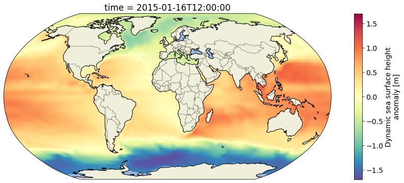
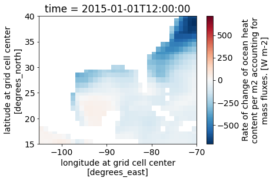

import s3fs
import requests
import numpy as np
import xarray as xr
import matplotlib.pyplot as plt
import matplotlib.animation as animation
import cartopy
import cartopy.crs as ccrs
import cartopy.feature as cfeat
from json import dumps
from io import StringIO
from os.path import dirname, join
from IPython.display import HTML
plt.rcParams.update({'font.size': 14})Direct Access to ECCO V4r4 Datasets in the Cloud
imported on: 2023-07-05
This notebook is from a different repository in NASA’s PO.DAAC, ECCO.
The original source for this document is https://github.com/podaac/ECCO/blob/main/Data_Access/cloud_direct_access_s3.ipynb
Direct access to ECCO data in S3 (from us-west-2)
Getting Started
In this notebook, we will access monthly sea surface height from ECCO V4r4 (10.5067/ECG5D-SSH44). The data are provided as a time series of monthly netCDFs on a 0.5-degree latitude/longitude grid.
We will access the data from inside the AWS cloud (us-west-2 region, specifically) and load a time series made of multiple netCDF datasets into a single xarray dataset. This approach leverages S3 native protocols for efficient access to the data.

Requirements
AWS
This notebook should be running in an EC2 instance in AWS region us-west-2, as previously mentioned. We recommend using an EC2 with at least 8GB of memory available.
The notebook was developed and tested using a t2.large instance (2 cpus; 8GB memory).
Python 3
Most of these imports are from the Python standard library. However, you will need to install these packages into your Python 3 environment if you have not already done so:
- s3fs
- requests
- pandas
- xarray
- matplotlib
- cartopy
Make a folder to write some outputs, if needed:
!mkdir -p outputs/Inputs
Configure one input: the ShortName of the desired dataset from ECCO V4r4. In this case it’s the following string that unique identifies the collection of monthly, 0.5-degree sea surface height data.
ShortName = "ECCO_L4_SSH_05DEG_MONTHLY_V4R4"Earthdata Login
You should have a .netrc file set up like:
machine urs.earthdata.nasa.gov login <username> password <password>Direct access from S3
Set up an s3fs session for authneticated access to ECCO netCDF files in s3:
def begin_s3_direct_access(url: str="https://archive.podaac.earthdata.nasa.gov/s3credentials"):
response = requests.get(url).json()
return s3fs.S3FileSystem(key=response['accessKeyId'],
secret=response['secretAccessKey'],
token=response['sessionToken'],
client_kwargs={'region_name':'us-west-2'})
fs = begin_s3_direct_access()
type(fs)s3fs.core.S3FileSystemDatasets
sea surface height (0.5-degree gridded, monthly)
ECCO_L4_SSH_05DEG_MONTHLY_V4R4
Get a list of netCDF files located at the S3 path corresponding to the ECCO V4r4 monthly sea surface height dataset on the 0.5-degree latitude/longitude grid.
ssh_Files = fs.glob(join("podaac-ops-cumulus-protected/", ShortName, "*2015*.nc"))
len(ssh_Files)12Open with the netCDF files using the s3fs package, then load them all at once into a concatenated xarray dataset.
ssh_Dataset = xr.open_mfdataset(
paths=[fs.open(f) for f in ssh_Files],
combine='by_coords',
mask_and_scale=True,
decode_cf=True,
chunks={'latitude': 60, # These were chosen arbitrarily. You must specify
'longitude': 120, # chunking that is suitable to the data and target
'time': 100} # analysis.
)
ssh = ssh_Dataset.SSH
print(ssh)<xarray.DataArray 'SSH' (time: 12, latitude: 360, longitude: 720)>
dask.array<concatenate, shape=(12, 360, 720), dtype=float32, chunksize=(1, 60, 120), chunktype=numpy.ndarray>
Coordinates:
* time (time) datetime64[ns] 2015-01-16T12:00:00 ... 2015-12-16T12:00:00
* latitude (latitude) float32 -89.75 -89.25 -88.75 ... 88.75 89.25 89.75
* longitude (longitude) float32 -179.8 -179.2 -178.8 ... 178.8 179.2 179.8
Attributes:
coverage_content_type: modelResult
long_name: Dynamic sea surface height anomaly
standard_name: sea_surface_height_above_geoid
units: m
comment: Dynamic sea surface height anomaly above the geoi...
valid_min: [-1.88057721]
valid_max: [1.42077196]Plot the gridded sea surface height time series
But only the timesteps beginning in 2015:
ssh_after_201x = ssh[ssh['time.year']>=2015,:,:]
print(ssh_after_201x)<xarray.DataArray 'SSH' (time: 12, latitude: 360, longitude: 720)>
dask.array<concatenate, shape=(12, 360, 720), dtype=float32, chunksize=(1, 60, 120), chunktype=numpy.ndarray>
Coordinates:
* time (time) datetime64[ns] 2015-01-16T12:00:00 ... 2015-12-16T12:00:00
* latitude (latitude) float32 -89.75 -89.25 -88.75 ... 88.75 89.25 89.75
* longitude (longitude) float32 -179.8 -179.2 -178.8 ... 178.8 179.2 179.8
Attributes:
coverage_content_type: modelResult
long_name: Dynamic sea surface height anomaly
standard_name: sea_surface_height_above_geoid
units: m
comment: Dynamic sea surface height anomaly above the geoi...
valid_min: [-1.88057721]
valid_max: [1.42077196]Plot the grid for the first time step using a Robinson projection. Define a helper function for consistency throughout the notebook:
def make_figure(proj):
fig = plt.figure(figsize=(16,6))
ax = fig.add_subplot(1, 1, 1, projection=proj)
ax.add_feature(cfeat.LAND)
ax.add_feature(cfeat.OCEAN)
ax.add_feature(cfeat.COASTLINE)
ax.add_feature(cfeat.BORDERS, linestyle='dotted')
return fig, ax
fig, ax = make_figure(proj=ccrs.Robinson())
ssh_after_201x.isel(time=0).plot(ax=ax, transform=ccrs.PlateCarree(), cmap='Spectral_r')<matplotlib.collections.QuadMesh at 0x7fae2533d730>
Now plot the whole time series (post-2010) in an animation and write it to an mp4 file called ecco_monthly_ssh_grid_2015_to_x.mp4:
def get_animation(var, cmap: str="Spectral_r"):
"""Get time series animation for input xarray dataset"""
def draw_map(i: int, add_colorbar: bool):
data = var[i]
m = data.plot(ax=ax,
transform=ccrs.PlateCarree(),
add_colorbar=add_colorbar,
vmin=var.valid_min,
vmax=var.valid_max,
cmap=cmap)
plt.title(str(data.time.values)[:7])
return m
def init():
return draw_map(0, add_colorbar=True)
def animate(i):
return draw_map(i, add_colorbar=False)
return init, animateNow make the animation using the function:
fig, ax = make_figure(proj=ccrs.Robinson())
init, animate = get_animation(ssh_after_201x)
ani = animation.FuncAnimation(fig=fig,
func=animate,
frames=ssh_after_201x.time.size,
init_func=init,
interval=0.2,
blit=False,
repeat=False)
# Now save the animation to an MP4 file:
ani.save('outputs/ecco_monthly_ssh_grid_2015_to_x.mp4', writer=animation.FFMpegWriter(fps=8))
plt.close(fig)Render the animation in the ipynb:
#HTML(ani.to_html5_video())tflux (0.5-degree gridded, daily)
Now we will do something similar to access daily, gridded (0.5-degree) ocean and sea-ice surface heat fluxes (10.5067/ECG5D-HEA44). Read more about the dataset and the rest of the ECCO V4r4 product suite on the PO.DAAC Web Portal.
Use a “glob” pattern when listing the S3 bucket contents such that only netCDFs from January 2015 are represented in the resulting list of paths.
tflux_Files = fs.glob(join("podaac-ops-cumulus-protected/", "ECCO_L4_HEAT_FLUX_05DEG_DAILY_V4R4", "*2015-01*.nc"))
len(tflux_Files)31Now open them all as one xarray dataset just like before. Open and pass the 365 netCDF files to the xarray.open_mfdataset constructor so that we can operate on them as a single aggregated dataset.
tflux_Dataset = xr.open_mfdataset(
paths=[fs.open(f) for f in tflux_Files],
combine='by_coords',
mask_and_scale=True,
decode_cf=True,
chunks={'latitude': 60, # These were chosen arbitrarily. You must specify
'longitude': 120, # chunking that is suitable to the data and target
'time': 100} # analysis.
)
tflux = tflux_Dataset.TFLUX
print(tflux)<xarray.DataArray 'TFLUX' (time: 31, latitude: 360, longitude: 720)>
dask.array<concatenate, shape=(31, 360, 720), dtype=float32, chunksize=(1, 60, 120), chunktype=numpy.ndarray>
Coordinates:
* time (time) datetime64[ns] 2015-01-01T12:00:00 ... 2015-01-31T12:00:00
* latitude (latitude) float32 -89.75 -89.25 -88.75 ... 88.75 89.25 89.75
* longitude (longitude) float32 -179.8 -179.2 -178.8 ... 178.8 179.2 179.8
Attributes:
coverage_content_type: modelResult
direction: >0 increases potential temperature (THETA)
long_name: Rate of change of ocean heat content per m2 accou...
units: W m-2
comment: The rate of change of ocean heat content due to h...
valid_min: [-1713.51220703]
valid_max: [870.31304932]Select a region over the Gulf of Mexico and spatially subset it from the larger dataset by slicing on the latitude and longitude axes.
tflux_gom = tflux.sel(latitude=slice(15, 40),
longitude=slice(-105, -70))
print(tflux_gom.shape)(31, 50, 70)tflux_gom.isel(time=0).plot()<matplotlib.collections.QuadMesh at 0x7fae1689a550>
Plot the Jan 2015 surface heat flux as a gridded time series animation over the GOM study region.
fig, ax = make_figure(proj=ccrs.Mercator())
ax.coastlines()
ax.set_extent([tflux_gom.longitude.min(),
tflux_gom.longitude.max(),
tflux_gom.latitude.min(),
tflux_gom.latitude.max()])
init, animate = get_animation(tflux_gom, cmap="RdBu")
# Plot a time series animation write it to an mp4 file:
ani = animation.FuncAnimation(fig=fig,
func=animate,
frames=tflux_gom.time.size,
init_func=init,
interval=0.2,
blit=False,
repeat=False)
ani.save('outputs/ecco_daily_tflux_gom_2015.mp4', writer=animation.FFMpegWriter(fps=8))
plt.close(fig)